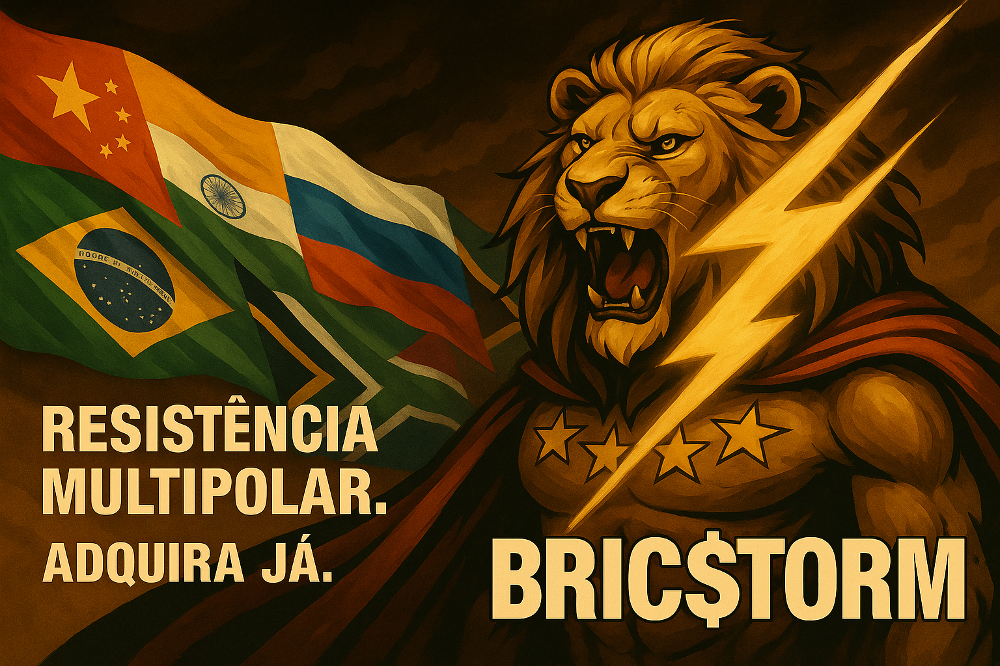
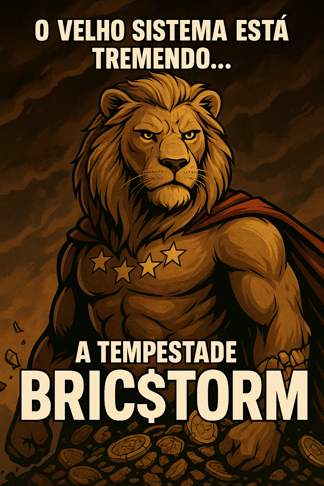

A revolução financeira que quebra as barreiras do sistema tradicional. Inspirado pela força dos BRICS, BRIC$TORM nasce como um símbolo de resistência e transformação global no mundo das criptomoedas.

Supply: 100,000,000,000 BRIC$

🌱 Q3 2025: Lançamento e engajamento inicial
🔥 Q4 2025: Expansão para CoinGecko, CoinMarketCap e listagens
🦁 2026: Parcerias com comunidades dos BRICS e grandes influenciadores
Junte-se à tempestade financeira que está mudando tudo!